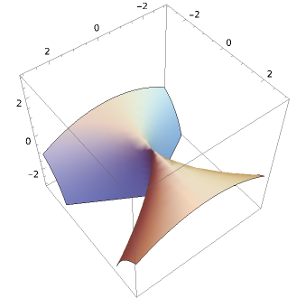

Elements of Classical Algebraic Geometry
1. Affine sets, the Zariski topology, and Hilbert's Nullstellensatz
Affine varieties are the fundamental building blocks of quasi-projective varieties, the central objects of study in classical algebraic geometry. In essence, an affine variety is the solution set of a system of polynomial equations \[f_1(x_1, \dots, x_n) = f_2(x_1, \dots, x_n) = \dots =f_{m}(x_1, \dots, x_n) = 0\] with coefficients in some field \(\k\). This solution set is made into a geometric object after we introduce the Zariski topology on it. Furthermore, two such solutions sets are allowed to communicate with each other only through a restricted class of functions, called regular maps. Setting things up this way allows us to define what it means for two solution sets to be isomorphic, even though they may arise in totally different contexts. (Much like in group theory, the notion of homomorphism and isomorphism allows us to extract an abstract group from its various guises.) An affine variety \(X\) is then basically an equivalence class of solution sets under the notion of regular isomorphism. It turns out that \(X\) is uniquely recoverable from the ring of regular functions on it. This ring is called its coordinate ring, denoted \(\k[X]\). The basic philosophy in affine algebraic geometry is then to translate "geometric notions" about \(X\) into ring-theoretic notions about \(\k[X]\), thereby supporting our geometric intuitions with rigorous algebra.
The relationship between the originating system of equations and its solution set is cleanest and makes most intuitive sense when the ground field \(\k\) is algebraically closed, and the main theorem(s) describing this relationship is Hilbert's Nullstellensatz in its various incarnations. This theorem is the most important piece of commutative algebra allowing us to set up the theory of affine varieties. Because algebraic geometry is easiest to understand when \(\k\) is algebraically closed, we will assume this throughout. (Later, we will see that the characteristic \(0\) situation is especially nice, but for now algebraic closed-ness is all we assume.)
1.1. Affine sets
We begin by defining the central geometric objects of this chapter.
- Affine space of dimension \(n\) (over \(\k\)), denoted \[\A^{n}_{\k}\] is the set of \(n\) -tuples \(p = (p_1, \dots, p_{n})\), \(p_{i} \in \k\).
- For each \(i\), we denote by \[x_{i}: \A^{n}_{\k} \to \A^{1}_{\k}\] the \(i\)-th coordinate function sending \((p_{1}, \dots, p_{n})\) to \(p_i\).
- If \(S \subset \k[x_{1} \dots, x_n]\) is a subset of polynomials, we define the vanishing set of \(S\) to be \[\V(S) = \big\{p \in \A^n_{\k} \mid f(p)=0 \, \textrm{for all}\, f \in S \big\}.\]
- A subset \(U \subset \A^{n}_{\k}\) is a Zariski open set if its complement is \(\V(S)\) for some \(S \subset \k[x_1, \dots, x_n]\).
- Conversely, any subset \(Z \subset \A^n_{\k}\) of the form \(\V(S)\) is called a Zariski closed (or, simply closed) subset. A Zariski closed subset of affine space also called an affine (or algebraic) set.
- More generally, if \(Z \subset \A^n_{\k}\) is an algebraic set, then a subset \(U \subset Z\) is a Zariski open subset of \(Z\) if \(U\) is the intersection of \(Z\) with a Zariski open subset of \(\A^n_{\k}\).
- A Zariski open subset of an algebraic set is called a quasi-affine set.
It is immediate that if \(S \subset \k[x_1, \dots, x_n]\) is any subset, and if \(I\) is the ideal generated by \(S\), then \(\V(S) = \V(I)\). So, our focus quickly moves to ideals in \(\k[x_1, \dots, x_n]\). The following exercise justifies the use of the words "closed/open."
Suppose \(I,J \subset \k[x_1, \dots, x_n]\) are two ideals. Show:
- \(\V(I \cdot J) = \V(I) \cup \V(J)\), and
- \(\V(I+J) = \V(I) \cap \V(J).\)
- Prove that two distinct ideals \(I\) and \(J\) can satisfy \(\V(I) = \V(J)\), and moreover, there exists an example where neither \(I \subset J\) nor \(J \subset I\).
- Prove that the Zariski open subsets of \(\A^{n}_{\k}\) satisfy the axioms of a topology. This topology is called the Zariski topology on \(\A^n_{\k}\).
- Prove that the Zariski closed, proper subsets of \(\A^{1}_{\k}\) are precisely the finite subsets.
- Prove that every finite subset of \(\A^{n}_{\k}\) is closed, but that the converse is false when \(n \geq 2\).
- If \(Z \subset \A^n_{\k}\) is an affine set, prove that the subsets of \(Z\) which are closed in \(\A^n_{\k}\) satisfy the axioms satisfied by closed sets in a topology. This is called the Zariski topology on \(Z\).
In light of this exercise, in order to create an algebraic set, we need only consider \(\V(I)\)'s for ideals \(I \subset \k[x_1, \dots, x_n]\). Whenever we say "open" or "closed", we refer to the Zariski topology.
The beauty in classical algebraic geometry is only seen through its countless, interesting examples. Certain examples are more educational than others and have special names. Here are a few to start:
- The parabola \[\V(y-x^{2}) \subset \A^{2}_{\k}.\]
- The quadric cone \[\V(xy-z^2) \subset \A^3_{\k}.\]
An affine quadric surface \[\V(xy-z) \subset \A^{3}_{\k}.\]

- The nodal cubic \[\V(y^2 - x^{2}-x^{3}) \subset \A^2_{\k}.\]
- The cuspidal cubic \[\V(y^2-x^3) \subset \A^2_{\k}.\]
- A particular elliptic curve \[\V(y^2-x^3+x) \subset \A^2_{\k}.\]
- The affine twisted cubic \[\V(x^2-y,x^3-z) = \V(x^2-y, xy-z) \subset \A^3_{\k}.\]
- The Whitney umbrella \[\V(x^2+zy^2) \subset \A^{3}_{\k}.\]

- A line and a plane \[\V(xz,yz) \subset \A^3_{\k}.\]
1.1.1. Pictures
In the list of examples above, what do those pictures mean? Clearly they are real images, meaning they exist in \(\A^2_{\R}\) or \(\A^{3}_{\R}\). But this is not our true context: we've assumed \(\k\) is algebraically closed! Unfortunately, it is not possible to draw a true representation in this case, so we refer to these sorts of images as "real cartoons."
1.1.2. Operations \(\V\) and \(\I\)
The operation \(\V\) is a surjective function: \[\V(-): \big\{\,\textrm{ideals in} \,\, \k[x_1, \dots, x_n] \big\} \to \big\{\,\textrm{affine subsets of} \,\, \A^{n}_{\k} \big\}.\]
But we can also go backwards, from sets to ideals:
Let \(Z \subset \A^n_{\k}\) be any subset. We define the ideal of \(Z\) to be \[\I(Z) = \big\{ f \in \k[x_1,\dots,x_n] \mid f(z)=0\,\, \textrm{for all}\,\,z \in Z \big\}.\]
And so, \(\I\) defines a function: \[\I(-): \big\{\,\textrm{affine subsets of} \,\, \A^{n}_{\k} \big\} \to \big\{\,\textrm{ideals in} \subset \k[x_1, \dots, x_n] \big\}.\]
Let \(p = (p_1, \dots, p_n) \in \A^n_{\k}\) be any point. Then \(\I(\{p\}) = (x_1-p_1, \dots, x_n-p_n)\). Notice that \(\I(\{p\}) \subset \k[x_1,\dots, x_n]\) is a maximal ideal. So, we typically use the symbol \(\fm_p\) for this ideal.
\(\I(-)\) satisfies some obvious properties, for example if \(Z_1 \subset Z_2\) is a proper containment of affine subsets, then we get a strict, opposite containment of ideals \(\I(Z_2) \supset \I(Z_1)\).
Since \(\V\) and \(\I\) point in opposite directions, it's natural to wonder that their compositions (both ways) are. One composition, found in the next exercise, is easy to understand. The other composition leads naturally to Hilbert's Nullstellansatz, and so we postpone it.
- Prove: For any subset \(Z \subset \A^{n}_{\k}\), we have \(Z \subset \V(\I(Z))\).
- Prove: \(Z \subset \A^n_{\k}\) is Zariski-closed if and only if \(Z = \V(\I(Z))\).
- In fact, prove: For any \(Z \subset \A^n_{\k}\), \(\V(\I(Z))\) is the closure of \(Z\) under the Zariski topology on \(\A^n_{\k}\).
- Prove: If \(Z_1\) and \(Z_2\) are affine sets, then \(\I(Z_1 \cup Z_2) = \I(Z_1) \cap \I(Z_2)\). (Careful: Is \(\I(Z_1 \cap Z_2) = \I(Z_1) + \I(Z_2)\)?)
- Disprove: If \(Z_1, Z_2\) are two affine sets, then \(\I(Z_1) \cup \I(Z_2) = \I(Z_1) \cdot \I(Z_2)\).
1.1.3. Prime ideals and irreducible affine sets
Affine sets have their "main, big pieces," called irreducible components. For instance, in the irreducible components of the line and plane \(\V(xz,yz) \subset \A^{3}_{\k}\) are the line \(\V(x,y)\) and the plane \(\V(z)\). To make this concept precise, we borrow the notion of reducibility from topology, which we elaborate on here.
An affine set \(Z\) is reducible if it is the union of two non-empty, proper closed subsets. Otherwise, \(Z\) is said to be irreducible. More generally, a topological space \(X\) is reducible if it is the union of two non-empty, proper closed subsets, and is irreducible otherwise.
If \(X\) is any topological space, then a subset \(Y \subset X\) is called an irreducible component of \(X\) if \(Y\) is maximal among closed, irreducible subsets of \(X\).
- Prove: Any two non-empty open subsets of an irreducible topological space must intersect.
- Prove: If \(U \subset X\) is a non-empty open set in an irreducible topological space \(X\), then \(X\) is the closure of \(U\), i.e. \(U\) is dense in \(X\).
- Suppose \(X\) is a topological space, and \(A,B \subset X\) are proper closed subsets satisfying \(X = A \cup B\). Prove: If \(A\) is also irreducible, then \(A\) is in fact an irreducible component of \(X\).
Our next proposition says that for affine sets, irreducibility has a really nice algebraic interpretation.
An affine set \(Z \subset \A^{n}_{\k}\) is irreducible if and only if \(\I(Z) \subset \k[x_1, \dots, x_n]\) is a prime ideal.
First assume \(Z\) is an irreducible affine set, and \(f,g \in \k[x_1, \dots, x_n]\) satisfy \(fg \in \I(Z)\), and \(f \notin \I(Z)\). Then, \(fg \in \I(Z)\) implies \(Z = (\V(f) \cap Z) \cup (\V(g) \cap Z).\) And \(f \notin \I(Z)\) implies \(\V(f) \cap Z \neq Z.\) Thus, by irreducibility we deduce \(\V(g) \cap Z = Z\), i.e. \(g \in \I(Z)\). So \(\I(Z)\) is prime.
Next assume \(Z = A \cup B\) with \(A, B\) both proper closed subsets of \(Z\). In particular, \(A\) is not contained in \(B\) and vice versa. Therefore, there exists a polynomial \(f\) vanishing on \(A\) but not entirely on \(B\) and a polynomial \(g\) vanishing on \(B\) but not entirely on \(A\). Then \(fg \in \I(Z)\), yet neither \(f\) nor \(g\) is in \(\I(Z)\). So \(\I(Z)\) is not prime.
1.2. Algebra reminders
Before seeing some of the more interesting algebra lying at the foundations of our subject, let's make sure certain algebraic concepts are solidified. Throughout this section, suppose \(R\) is an arbitrary ring. "Ring" here means commutative ring with \(1\).
- An ideal \(I \subset R\) is maximal (resp. prime) if and only if \(R/I\) is a field, (resp. integral domain).
- Dictionary: The assignment \(\overline{J} \mapsto q^{-1}(\overline{J})\) sets up a bijection between the set of ideals of \(R/I\) and the set of ideals in \(R\) containing \(I\), where \(q: R \to R/I\) is the quotient map.
- Does the Dictionary respect "primeness" and/or "maximality" of ideals?
- True or false: If \(\varphi: A \to B\) is a ring homomorphism then the preimage of any prime ideal is again prime.
- True or false: If \(\varphi: A \to B\) is a ring homomorphism, then the image of any ideal is again an ideal.
- True or false: If \(\varphi: A \to B\) is a ring homomorphism, then the preimage of any maximal ideal is again maximal.
Now suppose \(Z \subset \A^{n}_{\k}\) is an affine set, with ideal \(\I(Z)\).
- \(p \in \A^{n}_{\k}\) lies in \(Z\) if and only if \(\I(Z) \subset \fm_{p}\).
- A point of \(Z\) is the same thing as a \(\k\)-algebra homomorphism \(\kappa: \k[x_1, \dots, x_n]/\I(Z) \to \k\).
1.2.1. Ring-value points
Suppose \(R\) is a \(\k\)-algebra. We will sometimes use the concept of a \(R\)-point of an affine set (or more generally, algebraic variety) \(Z\). The definition is as follows:
Let \(R\) be a \(\k\)-algebra, and suppose \(Z \subset \A^{n}_{\k}\) is an affine set. An \(R\)-point of \(Z\) is a \(\k\)-algebra homomorphism \(\k[x_1, \dots, x_{n}]/\I(Z) \to R\).
Why \(R\)-points are called \(R\)-points: Prove that the \(R\)-points of \(Z\) are in natural bijection with the set of tuples \((r_1, \dots, r_n) \in R^{n}\) satisfying \(f(r_1, \dots, r_n) = 0\) for all \(f \in \I(Z)\).
One way to characterize integral domains: Prove that a ring \(R\) is an integral domain if and only if there exists an injective homomorphism from \(R\) to a field.
1.3. Important Algebra: The Nullstellensatz
Our first fundamental theorem, which appears in several different forms in several different levels of generality, explains the relationship between the operations \(\V(-)\) and \(\I(-)\). The exact message of Hilbert's Nullstellensatz can be confusing for newcomers, so I'll try to give many different viewpoints here. The theorem will also play an important role in laying the foundation for the concept of regular functions.
Here are two popular ways of thinking about the Nullstellensatz:
- When \(\k\) is algebraically closed, the Nullstellensatz says that the only way for \(\V(I)\) to be empty is if \(I = (1)\), the unit ideal. In other words, any system of polynomial equations which is not equivalent to \(1=0\) must have solutions in \(\A^n_{\k}\).
- When \(\k\) is algebraically closed, the Nullstellensatz provides the precise list of maximal ideals in \(\k[x_1, \dots, x_n]\): it says that every maximal ideal is of the form \(\fm_{p}\) for some point \(p \in \A^{\k}\).
Let \(\k\) be an arbitrary field.
- If \(L\) is a finitely generated \(\k\)-algebra which is also a field, then \(L\) is a finite field extension of \(\k\).
- A polynomial system of equations \(\big\{f_1=0, f_2=0, \dots, f_m =0 \big\}\) with \(f_i \in \k[x_1, \dots, x_n]\) has a solution in some \(\k\)-algebra if and only if it has a solution \((\alpha_1, \dots, \alpha_n)\) where each \(\alpha_i\) is algebraic over \(\k\).
- If \(\k\) is algebraically closed, then every maximal ideal of \(\,\,\k[x_1, \dots, x_n]\) is of the form \((x_1-p_1, \dots, x_n-p_n)\) for some \(p_i \in \k\).
- If \(\k\) is algebraically closed, and if \(I \subset \k[x_1, \dots, x_n]\) satisfies \(\V(I) = \emptyset\), then \(I = (1)\), the unit ideal.
- If \(\k\) is algebraically closed, and if \(\fp \subset \k[x_1, \dots, x_n]\) is a prime ideal, then \(\I(\V(\fp)) = \fp\).
Let \(\k[x]\) denote the polynomial ring in one variable, and suppose \(f_1, \dots, f_m \in \k[x]\) are finitely many polynomials. Prove that the ring \(\k[x, \frac{1}{f_1}, \dots, \frac{1}{f_m}]\) is never a field.
2. Regular functions and regular mappings
Next, we must fix the mechanism by which algebraic sets and quasi-affine sets communicate with each other. This will also allow us to talk about a quasi-affine set without reference to an ambient \(\A^{n}_{\k}\). In short, we allow ourselves only to use functions which are locally describable using ratios of polynomial functions. These functions are called regular functions.
Let \(U \subset \A^{n}_{\k}\) be a quasi-affine set.
- Let \(z \in U\) be a point. A function \(f: U \to \A^1_{\k}\) is regular at \(z\) if: there exists an open set \(V \subset U\) containing \(z\) and an element \(p/q \in \k(x_1, \dots, x_n)\) defined on \(V\) such that \(f|_{V}\) agrees with \(p/q\) on \(V\). We say \(f: U \to \A^{1}_{\k}\) is regular if it is regular at every point \(z \in U\). The set of regular functions \(U \to \A^1_{\k}\) is naturally a \(\k\)-algebra, and we denote it by \(\k[U]\).
- A map \(\varphi = (f_1, \dots, f_m): U \to \A^m_{\k}\) is regular if each coordinate function \(f_i\) is in \(\k[U]\).
- If \(U' \subset \A^{m}_{\k}\) is another quasi-affine set then a function \(\varphi: U \to V\) is regular if the composite \(U \to U' \hookrightarrow \A^m_{\k}\) is regular as in part (2).
- Two quasi-affine sets \(U \subset \A^{n}_{\k}\), \(U' \subset \A^{m}_{\k}\) are isomorphic if there exist regular mappings \(\varphi: U \to U'\), \(\varphi': U' \to U\) which compose to identity both ways.
It would be nice if this restricted class of functions behaved well with respect to other choices we've made. For instance, it comes as a relief that:
Regular functions and mappings are continuous for the Zariski topology.
In class. (Then I'll put it here.)
Let \(\varphi: U \to U'\) be a regular mapping between quasi-affine sets. Prove:
- If \(g \in \k[U']\) then \(g \circ \varphi \in \k[U]\).
- The formula \(g \mapsto g \circ \varphi\) defines a \(\k\)-algebra homomorphism \(\k[U'] \to \k[U]\). (This homomorphism is denoted \(\varphi^{\sharp}\).)
- Without using anything later in the text, calculate \(\k[\A^{1}_{\k}]\).
After doing the previous exercise, one sees that the composition of regular mappings is again regular.
If \(U \subset \A^{n}_{\k}\) is a quasi-affine set, then there is a very quick way to produce regular functions on \(U\): restrict a polynomial \(f(x_1, \dots, x_n)\) to \(U\). Therefore, we always have a ring homomorphism \(\k[x_1, \dots, x_n] \to \k[U]\). Secondly, clearly if \(f \in \I(U)\), then \(f\) restricts to the zero function \(0 \in \k[U]\). Therefore, restriction of polynomials induces a homomorphism \[\k[x_1, \dots, x_n]/\I(U) \to \k[U].\] One fundamental use of the Nullstellensatz provides great news in the case that \(U \subset \A^{n}_{\k}\) is affine.
Let \(Z \subset \A^n_{\k}\) be an affine set. Then every regular function on \(Z\) is the restriction of a polynomial in \(\k[x_1, \dots, x_n]\), and, the restriction homomorphism \(\k[x_1, \dots, x_n]/\I(Z) \to \k[Z]\) is an isomorphism.
In class first, then I'll put here.
This is why, when \(Z \subset \A^{n}_{\k}\) is affine, the ring of regular functions \(\k[Z]\) is called the coordinate ring of \(Z\) – it just turns out to be the algebra of functions obtained by playing around with only the coordinate functions \(x_1, \dots, x_n\) restricted to \(Z\).
- Let \(Z \subset \A^n_{\k}\) be an algebraic subset, and let \(f \in \k[x_0, \dots, x_n]\) be any polynomial. If \(\varphi: Z_f \to \A^1_{\k}\) is a regular function then there exists a polynomial \(a\) such that \(p = a/f^{m}\) for some \(m \geq 0\).
- Very far-reaching idea: Suppose \(W\) is a quasi-affine set and \(U \cup V = W\) is an open cover by Zariski open subsets. Prove that \(\k[W]\) is in natural bijection with the set of pairs \((f,g)\) where \(f \in \k[U]\), \(g \in \k[V]\) satisfying \(f|_{U \cap V} = g|_{U \cap V}\). (Somewhere, you must use that \(U\) and \(V\) are open. Provide an example illustrating why.)
- Compute \(\k\left[\A^{2}\setminus \{(0,0)\}\right]\) using the ubiquitous idea in the previous exercise.
- Compute \(\k\left[\A^{2}\setminus \{(0,0),(1,1)\}\right]\).
- Explain why punching out points in \(\A^{2}_{\k}\) is more interesting than punching out points in \(\A^{1}_{\k}\) from the point of view of this chapter.
- Hands-on: Consider the series of examples in the beginning of these notes. Try to produce a non-constant regular mapping from any one to any other. How successful were you?
- Hands-on challenge: Assume the characteristic of \(\k\) is \(2\) or \(3\). Prove that there is no non-constant regular mapping from any non-empty open subset of \(\A^{1}_{\k}\) to the elliptic curve \(\V(y^{2} - x^{3}-1) \subset \A^{2}_{\k}\). Reflect on this. What happens in char. \(2\) and \(3\)?
- Similarly, show that there is no non-constant regular mapping from any non-empty open subset of \(\A^{1}_{\k}\) to the Fermat curve \(\V(x^3+y^3-1)\), assuming the characteristic of \(\k\) is not \(3\).